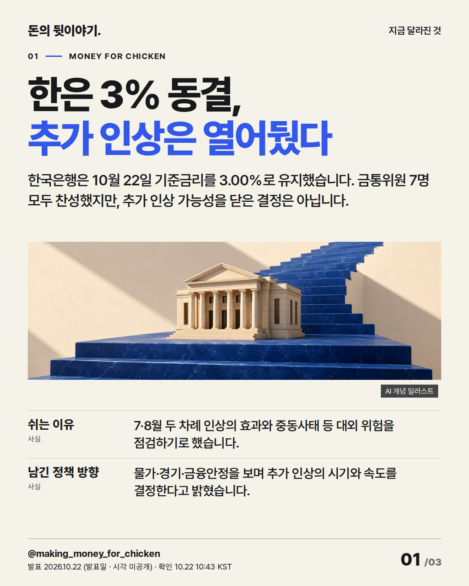
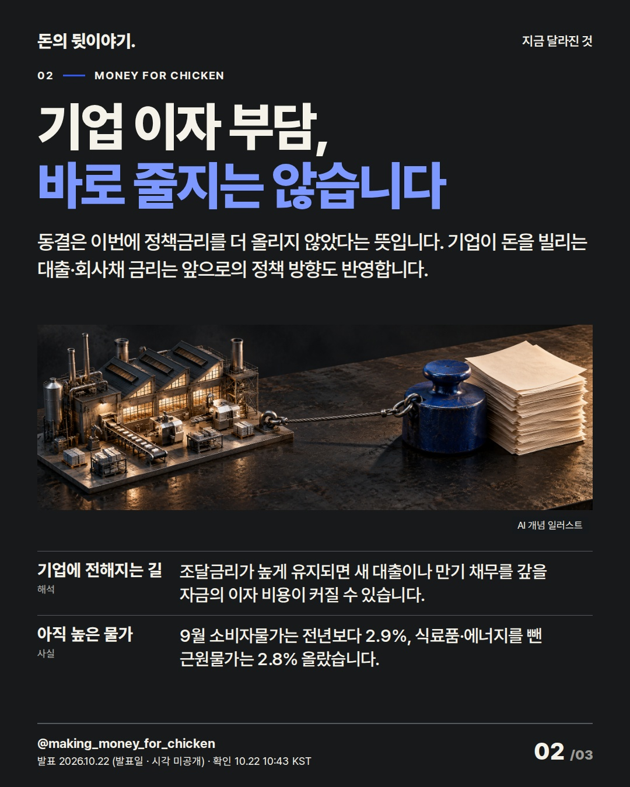
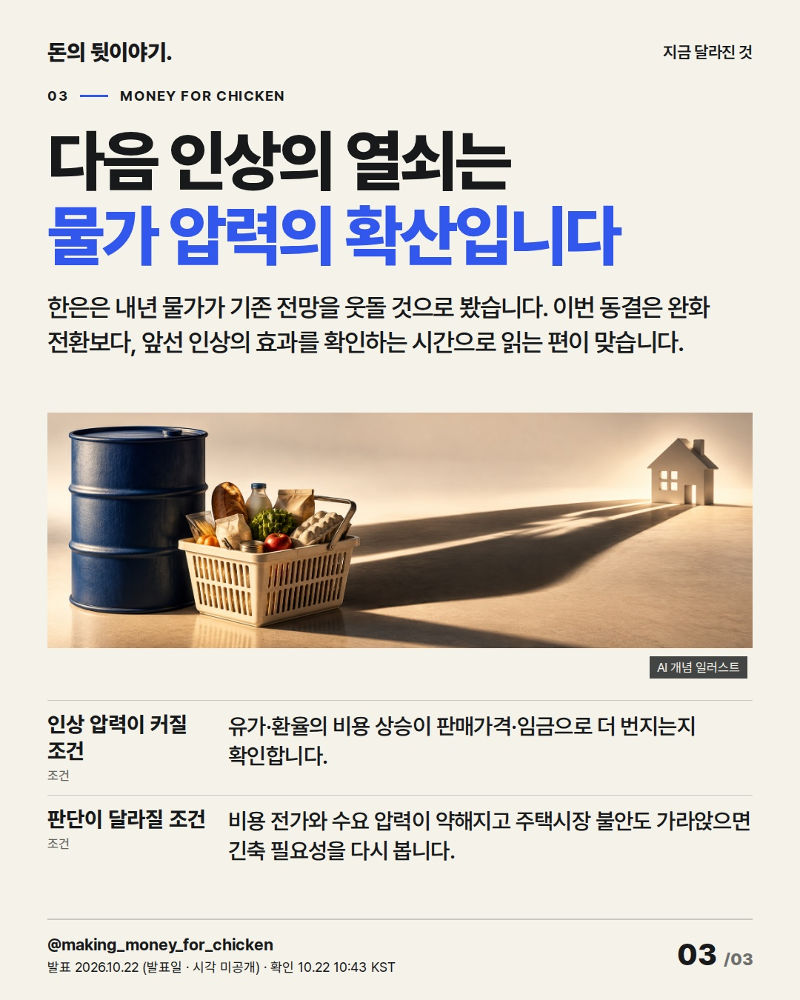

한은이 금리를 동결했다고 기업의 이자 부담까지 곧바로 줄지는 않습니다. 이번 결정은 인하의 시작보다, 앞선 인상의 효과를 확인하는 시간에 가깝습니다. #한국은행 #금리 #국내증시

한국은행은 10월 22일 기준금리를 3.00%로 유지했습니다. 금통위원 7명 모두 찬성했지만, 추가 인상 가능성을 닫은 결정은 아닙니다.
AI 생성 개념 일러스트 · 실제 현장이나 공식 제품 사진이 아닙니다.

동결은 이번에 정책금리를 더 올리지 않았다는 뜻입니다. 기업이 돈을 빌리는 대출·회사채 금리는 앞으로의 정책 방향도 반영합니다.
AI 생성 개념 일러스트 · 실제 현장이나 공식 제품 사진이 아닙니다.

한은은 내년 물가가 기존 전망을 웃돌 것으로 봤습니다. 이번 동결은 완화 전환보다, 앞선 인상의 효과를 확인하는 시간으로 읽는 편이 맞습니다.
AI 생성 개념 일러스트 · 실제 현장이나 공식 제품 사진이 아닙니다.
{
"improvement": "인도네시아·서버·GM·관세·TSMC 최근 5편과 실제 카드·편집 기록을 비교했습니다. 인도네시아 마지막 장의 짧은 설명과 GM의 숫자 사이 연결 부족을 보완해, 이번에는 동결→기업 이자→물가 전이 조건을 세 장으로 이었습니다.",
"reason": "남긴 핵심은 동결과 완화 전환의 차이입니다. 3.00%만으로 주가 상승을 연결하지 않고, 정책 기대가 실제 자금조달 비용과 기업 이익에 전달되는 이유를 풀었습니다. 성장률 세부 전망·해외 금리·당일 미확인 가격은 덜었습니다.",
"application": "제목 후보 '한은 3% 동결, 추가 인상은 열어뒀다', '동결했어도 돈값은 아직 높다', '한은이 멈춘 건 금리 인상의 속도'를 비교해 첫 안을 택했습니다. 2장 본문·첫 항목에 금리와 기업 비용을 연결하고 3장에 물가 확산·주택시장 조건을 남겼습니다.",
"avoided_repetition": "인도네시아의 예치금리·MSCI 이야기와 다르게 한은의 인상 경로를 다뤘습니다. 제어판·갈림길·주유기 구도를 반복하지 않고 계단의 은행, 공장과 금융비용, 에너지·장바구니로 바꿨습니다. 다음 편은 실제 조달금리 변화를 확인해 이 해석과 비교합니다."
}투자 참고용 · 매수·매도 권유 아님.